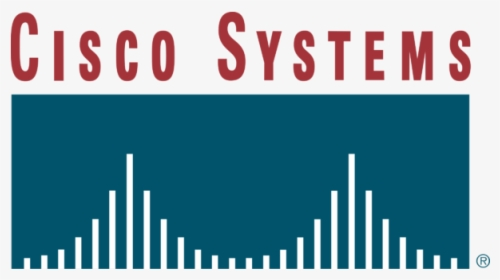
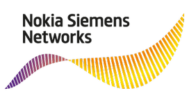
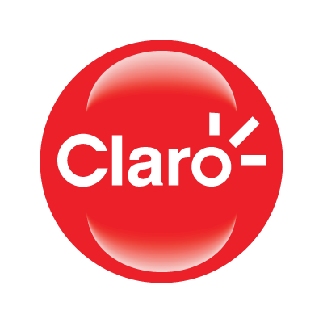
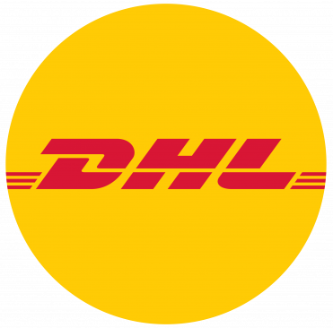

Maikom R. O. Rondado
Supply Chain (logística, suprimentos e operações)
Tecnologia (dados, metodologias e sistemas)
Profissional com experiência em logística, cadeia de suprimentos, telecomunicações e tecnologia da informação.
Trabalhei com os processos, projetos, sistemas e metodologias destas áreas.
Usuário de MS Office e outros aplicativos para controle de processos, elaboração de relatórios, dashboards e análises de dados.
Inglês e espanhol com bom nível de fluência devido a ter trabalhado diretamente com estrangeiros.
Devido ao meu interesse por frameworks de gestão, bancos de dados e visualização de informações, cursei pós-graduação em
Gestão e Governança de Tecnologia da Informação.
Palavras-chave
Projetos | Processos | Tecnologia | Dados | Sistemas
SCM | LSS | Frameworks | ERP-MRP | TMS-WMS
RDBMS | ETL | SQL e NoSQL
Power BI | Data Visualization | FrontEnd
Formação
Centro Paula Souza FATEC
Logística e Transportes
Graduação Tecnológica com carga horária diferenciada envolvendo os principais tópicos da Gestão de Logística e Transportes.
Centro Universitário SENAC
Gestão e Tecnologia
Pós-graduação em Gestão e Governança de TI, onde foi possível adquirir conhecimentos que são aplicados em qualquer segmento, inclusive na Logística.
Centro Cultural Norte Americano
Inglês e Espanhol
Alguns anos dedicados à aprendizagem de Inglês e Espanhol. Adquiri boa fluência nestes idiomas. Também trabalhei com estrangeiros.
Experiência




O objetivo era cumprir os milestones estipulados pelo projeto para o transporte de equipamentos a nível nacional. Fui responsável por acompanhar as etapas fiscais de entrada, saída e transportes até o local da entrega. Isso incluía trabalhar junto às áreas internas para garantir efetividade do processo fiscal e para poder movimentar os equipamentos. Nossa equipe desenvolveu relatórios que priorizavam o atendimento dos pedidos que o projeto demandava.
Trabalhamos diretamente com o SAP garantindo a qualidade das informações de pedidos colocados no sistema por uma equipe de analistas. Obtive boas noções de Comex e as principais tarefas envolviam faturamento de equipamentos, de serviços e follow up de atividades no warehouse. Contribuí na implementação de nota fiscal eletrônica, simplificação de tarefas e consolidação de informações em bancos de dados.
Experiência na qual absorvi informações da rotina diária de logística e cadeia de suprimentos. Trabalhei junto à equipe atendendo os pedidos de determinados clientes. Estavam inclusos também o controle de estoque, atendimento ao cliente, priorização de pedidos, acompanhamento de transporte e processos de reparos/exportação de peças e equipamentos de infraestrutura de TI.